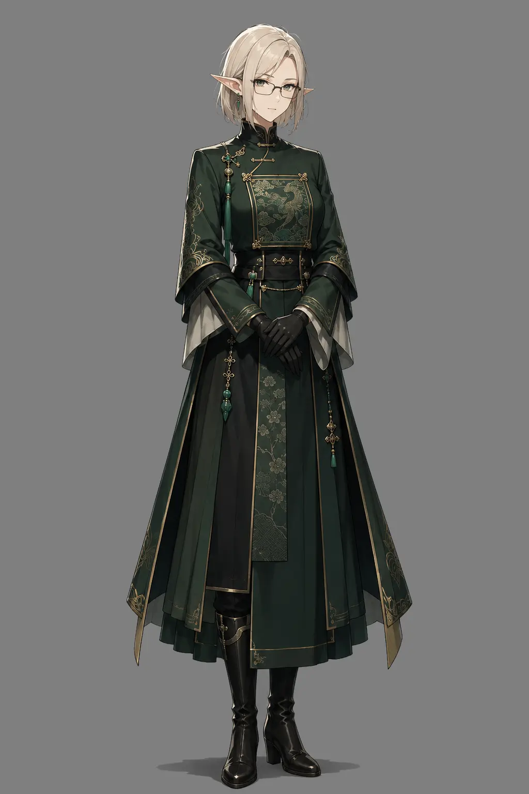

Xu Camille
“A young official hungry for power and success.”

A half elf native to the city of Ke Lou, she graduated local administrative school becoming assistant magistrate at the age of 23, gaining power since then. One day she wants to raise higher and maybe even secure herself a position in the capital.
Region: Lian, Ke Huan province, Ke Lou
Role: Assistant Magistrate to the Magistrate of Law
Known for: Sternness and strictness
Current pursuit: Higher Position
Background
A young child of a middle class family in the port city of Ke Lou, Camille was always more distant, as her father was a foreigner. She was given a strange, foreign name to honor her grandmother, who she didn't even knew, so her early life was harder than those of simillar peers. Despite that she pushed through, passing all the necessary exams at the age of 23 and becoming an assistant magistrate at the local court. With this posisiton she started cementing herself as a relatively powerful player on a local scene.
One day, when she was 24 she was approached by a mysterious foreign woman, offering her help and guidance, for a small price - being her contact in the region, which she gladly accepted. After that with the new knowledge and backing she became the eldest assistant magistrate at the age of 25, while doing hers and her bosse's bidding on a side, accumulating more influence. Now she stands before an important decision, that may lead to her gaining a proper Imperial Position.
Personality
- Personality trait/mannerism: stern, cold, distant, ambitious.
- Belief: Good work, good people
- Fear: the foreign influence coming to light
- Mannerism: -
- The light always reflects of her glasses in the right way
Connections
| Connection | What it means |
|---|---|
| Lady Amaki | The foreign influence over the young assistant magistrate. |
| Magistrate Hui Rei | The Immediate superior and the obstacle to the imperial position. |
Story Hooks
- The characters appear in the Ke Lou under the superiority of Lady Amaki, which may burn her cover.
- She wants to get rid of her superior, as the role would pass onto her.